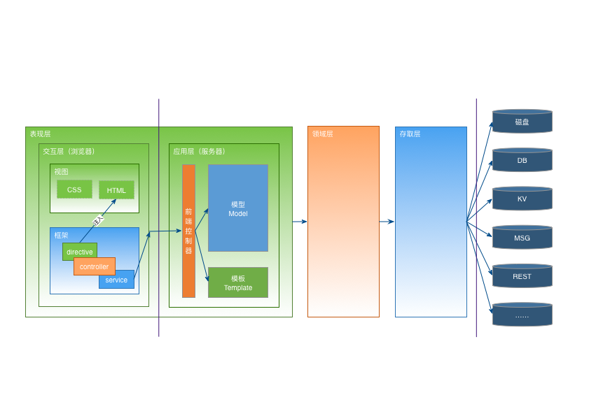

全栈工程师
博学之，审问之，慎思之，明辨之，笃行之。
有弗学，学之弗能，弗措也；
有弗问，问之弗知，弗措也；
有弗思，思之弗得，弗措也；
有弗辨，辨之弗明，弗措也；
有弗行，行之弗笃，弗措也。
人一能之，己百之；人十能之，己千之。
果能此道矣，虽愚必明，虽柔必强。
成为全栈工程师，并不是一件容易的事情：
有兴趣可以翻阅一下，这里并不赘述。
在我看来，要成为真正的“全栈”，而不是“样样皆通，样样稀松”的样子货，有两本《真经》是必修课：
- 《九阳真经》：《企业应用架构模式》Martin Fowler 著；王怀民，周斌 译
- 《九阴真经》：《软件方法》 潘加宇 著
《企业应用架构模式（Patterns Of Enterprise Application Architecture）》（简称《PEAA》），是战略级别的神书。
该书初版于2003年，中文初版于2010年。
看似年深日久，实则越老越醇越香。
正所谓“太阳底下无新事”。
Web开发这十几年来，技术方面天翻地覆，日新月异——第一代iPhone发布于2007年1月9日，然后就真的颠覆和创造了好大一个行业——然而，其分层思想、架构模式等等，仍然没有超脱本书的范围。
甚至可以说，新技术引入导致的概念上的冲突和模糊（比如MVC vs MVVM vs MVT），阅读本书之后，反而会通透和清晰起来。
《PEAA》将系统架构分为三个基本层次：表现层、领域层、数据源层（存取层）。
而在Web应用之中，由于客户端和服务器的天然隔离，事实上将表现层分成了交互层和应用层，因此实际上是四层架构：
- 界面交互（风）：风，敏捷。在界面交互层，唯一不变的就是改变。核心是要快进快出，不断试错；
- 应用为王（火）：火，融合。核心是要转换数据，适配界面交互的请求；
- 海量服务（水）：水，汇聚。前端的涓涓细流，在这里汇聚成汪洋大海。核心是要稳定可靠，追求“5个9”（99.999%）；
- 数据银行（地）：地，持久。数据说明一切，一切都要看数据。核心是要详尽准确，容灾容错。

另一本战术级别的神书，就是潘加宇所著的《软件方法》。
大抵一本有追求的书，总喜欢给自己冠上“深入浅出”的前缀。
浅出的是操作，深入的是原理。
知其然，并知其所以然。
然而，说得太浅，就变成满本书都是软件安装的截图。
说得太深，又变成云里雾里，看上去都是认识的字，读起来满脑子浆糊。
这里面的平衡少有书籍能够把握得好。
而作为一本讲述方法论的书，《软件方法》做得无可挑剔。
精通《PEAA》，网站的组织和架构已经没有任何秘密。
然并卵，没有业务的洗礼，那也只是屠龙之技。
而从业务到代码，还有很长的路要走。
《软件方法》倡导的核心工作流：业务建模 -> 需求 -> 分析 -> 设计，大大简化了软件开发的复杂度。
首先能够理清一团乱麻的业务，重点是明确责任的归属；并能够减少需求变更导致的代码变动；把原本封装在大牛脑海里面的领域逻辑、特殊处理、潜规则……变成可积累和传承的知识；同时也能够帮助发现异常和风险点，针对性准备危机处理方案。
本站栏目的组织源自《PEAA》，内容上的组织则源自《软件方法》。
不因学而学，而为解决问题而学。
全栈工程师就是掌握20%常用技能的人，但这20%的技能会有80%的几率被用到，剩下那80%不常用的，让我们Google吧。